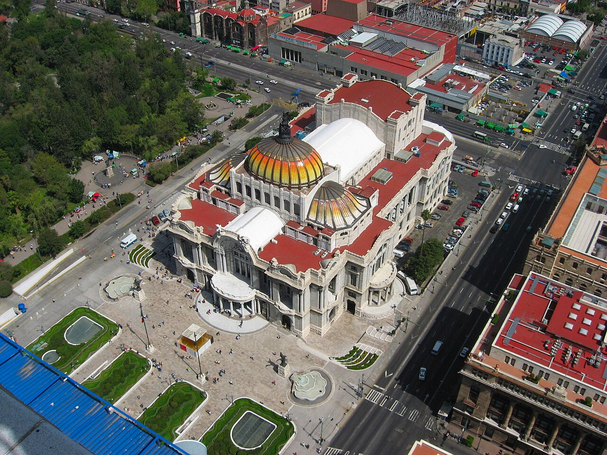
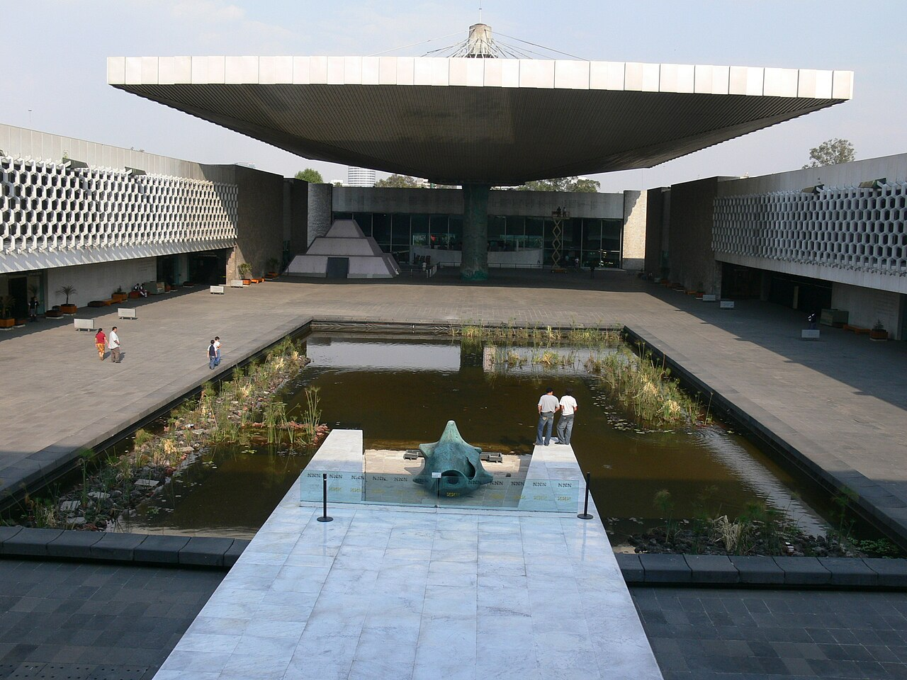
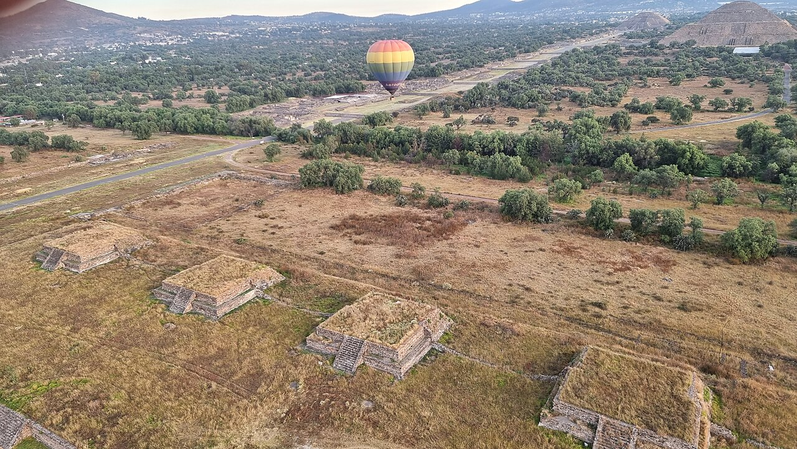
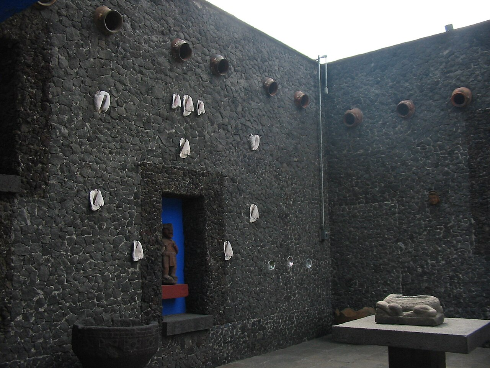

NOVEMBER 04 — 09, 2026
Mexico City.
Long lunches. Leafy streets.
One sunrise above the pyramids.
YOUR NOVEMBER ESCAPE
Four full days.
A city to explore.
Culture in the morning, a table worth lingering at, and neighborhoods best explored on foot. Stay in Condesa or Roma Norte, with one early adventure beyond the city.
Arrival in Roma
Evening arrival & tacos

Chapultepec & Roma
Anthropology, a long lunch & leafy streets

Balloons & pyramids
Sunrise flight, breakfast & the ruins

San Ángel & Coyoacán
Saturday market, Casa Azul & Rosetta
The historic heart
Centro Histórico & an easy final night
Departure
Morning checkout & airport transfer
Book the first departure on November 6, with breakfast and extended transport for the ruins. Leave the afternoon free and lucha libre optional. Hotel, flights, and reservations are still unconfirmed.
A soft landing.
Condesa · Roma Norte
An easy first evening. Settle into the neighborhood, find some tacos, and leave the sightseeing for tomorrow.
- Evening
Arrive & check in
Base yourself near Parque México in Condesa/Hipódromo or in Roma Norte. Leave dinner flexible around your actual arrival.
- Dinner
First tacos of the trip
Try the Roma Norte or Condesa branch of Taquería Orinoco if your arrival time permits. Keep the rest of the evening easy.
Airport transfer: confirm MEX versus NLU before arranging pickup. The airport and hotel are still to be confirmed.
Ancient worlds. Leafy streets.
Chapultepec · Roma · Condesa
Start with Mexico’s ancient civilizations, then spend the afternoon eating well and wandering Roma’s streets.
- 09:00–12:00
National Museum of Anthropology
Start with the Mexica and Maya galleries. Three focused hours will be more enjoyable than trying to see everything.
- 12:00–13:00
A walk through Chapultepec
Take a breather in the park before heading to lunch. Prefer architecture and views? Swap the morning museum for Chapultepec Castle.
- 13:30–15:00
- Afternoon
- Evening
Condesa at your own pace
Casual dinner near your base, with a stroll along Avenida Ámsterdam and around Parque México.
An easy first full day at altitude. Keep the afternoon flexible and carry water.
Above the pyramids.
Teotihuacán · optional Arena México
A sunrise balloon flight over the Teotihuacán valley, followed by breakfast and time among the ruins. The trip’s earliest start—and its big adventure.
- ~04:30–05:00
Hotel pickup
Planning estimate only. Arrange operator-provided round-trip transport and confirm your exact pickup the day before. Request the first flight departure for sunrise.
- Dawn
Hot-air-balloon flight
Check in, have coffee, and fly over the valley. Flight time and the route depend on the weather; a direct pass over a particular pyramid is not guaranteed.
- After landing
Breakfast & a slow reset
Have breakfast after the flight. Confirm what your chosen package includes before paying.
- ~09:00–12:00
- Afternoon
Back to the city & rest
Return time depends on the package and traffic. Leave the afternoon unbooked for a late lunch, shower, and nap.
- Evening · optional
Lucha libre at Arena México
Only if you feel up to it after the early start. Check the November 6 event and start time through CMLL before buying tickets.
Balloon flight is planned, not booked. Availability is unconfirmed. Wear warm layers and closed shoes; bring official ID. Flights are weather-dependent. If canceled, keep the ruins visit and discuss a weekend retry with the operator before moving other reservations.
Markets, courtyards & Casa Azul.
San Ángel · Coyoacán
Saturday’s craft market, a neighborhood lunch, and Frida Kahlo’s blue-walled home. Leave time to linger between the big stops.
- 10:00–12:00
Bazar Sábado in San Ángel
Browse crafts and art around Plaza San Jacinto, then wander the surrounding streets. The market opens at 10:00 on Saturdays.
- 12:00–13:00
- Lunch
Tostadas & the neighborhood plazas
Eat at Mercado de Coyoacán, then explore Jardín Centenario and Plaza Hidalgo.
- 15:00 target
Frida Kahlo Museum · Casa Azul
Book a timed ticket directly with the museum. Allow 60–90 minutes. This is a target time until tickets are secured.
- Evening
Coffee, then Rosetta
Enjoy one more café stop in Coyoacán, then return to Roma for dinner at Rosetta on Colima. Reserve ahead; keep time for the transfer.
Book Casa Azul first, then fit the rest of this day around the ticket time you get.
The city’s historic heart.
Centro Histórico · Roma Norte
A traditional breakfast, layers of history around the Zócalo, and one final evening in Roma.
- 09:00
Breakfast at El Cardenal
Go to the Palma location in Centro Histórico. Allow some flexibility for a table.
- Late morning
Zócalo, Cathedral & Templo Mayor
Walk the square and cathedral, then explore the archaeological site and museum at Templo Mayor.
- Early afternoon
Madero to Bellas Artes
Follow pedestrian Calle Madero to the Palacio de Bellas Artes exterior and Alameda Central. Stop for lunch when you’re ready.
- Afternoon
One more wander in Roma
Head back for cafés, independent shops, and any favorite streets you want to revisit. Leave time to pack.
- Dinner
A casual farewell dinner
Keep Sunday flexible: revisit a favorite near your base or stop for tacos at Orinoco in Roma. Rosetta is planned for Saturday instead.
Keep tonight relaxed: tomorrow is a morning departure.
Hasta la próxima.
Hotel → airport
Coffee, checkout, and the journey home. Keep the morning free of sightseeing.
- Morning
Checkout & airport transfer
Set your pickup using the confirmed airport, flight time, airline guidance, and live traffic. Arrange it the night before.
All itinerary times are local to Mexico City. Flight details and accommodation have not been added.
BEFORE YOU GO
A few things
to book ahead.
Planned itinerary · reservations pending
- 01
Sunrise balloon flight
Fri, Nov 6 · request the first departure, breakfast, and extended return transport for the ruins. Confirm total cost and availability.
Volare flight details Weather & cancellation terms - 02
Casa Azul
Sat, Nov 7 · aim for 15:00. Secure the timed ticket before fixing the rest of Saturday.
Museum tickets - 03
- 04
Lucha libre, if you’re up for it
Fri, Nov 6 · optional after the balloon day. Confirm the event and start time.
CMLL schedule
Little details.
Better days.
For the balloon morningWarm layers, closed shoes, official ID, and a phone or camera with a strap.
For getting aroundWalk within neighborhoods; allow generous transfer time across the city. Confirm MEX versus NLU for airport transfers.
A weather backupIf Friday’s flight is canceled, keep the ruins visit. Ask about a Saturday or Sunday retry before rearranging booked tickets.
TimingAll times are local to Mexico City and are planning estimates unless confirmed by a booking.
Photography & map credits
Mexico City Palacio de bellas artes.jpg — Jeses · CC BY-SA 2.5. Display cropped.
Globos en Teotihuacán Nov 2021 - 2.jpg — Jorge Castro Ruso · CC BY-SA 2.0. Display cropped.
National Museum - Zentraler Innenhof 2.jpg — Wolfgang Sauber · CC BY-SA 3.0. Display cropped.
One of the patios in the courtyard of Museo Frida Kahlo.jpg — Thelmadatter · Public domain. Display cropped.
Map: Leaflet · © OpenStreetMap contributors. Public Google listing coordinates and ratings checked October 18, 2026.